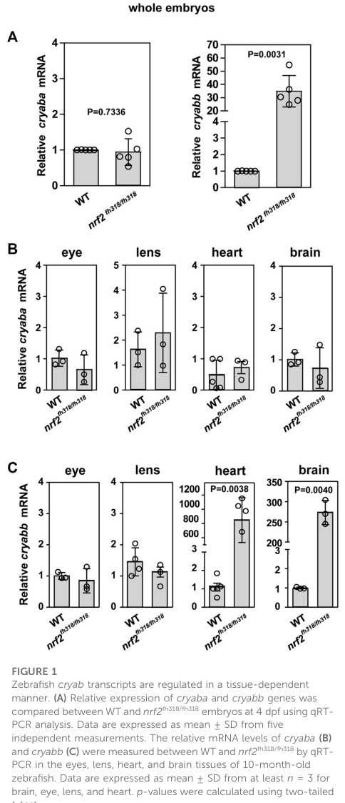

Zebrafish alpha-crystallin B chain a (cryaba, also known as cryab or alphaB1-crystallin) is a member of the small heat shock protein (sHSP/HSP20) family. It is one of two zebrafish alphaB-crystallin paralogs arising from the teleost whole-genome duplication, with cryaba being the lens-specific paralog and cryabb retaining the broad expression pattern of mammalian CRYAB (PMID:16420472). cryaba is predominantly expressed in the lens with lower expression in heart, brain, skeletal muscle, and liver (PMID:16420472). In the lens, cryaba localizes around the entire fiber cell membrane producing a honeycomb appearance (PMID:18406404). Recombinant cryaba (alphaB1-crystallin) has reduced chaperone-like activity compared to human CRYAB, particularly at higher temperatures, though it retains some chaperone activity at 25-30 degrees C (PMID:15692462, PMID:16420472). Loss of cryaba increases age-related cataract in zebrafish, with cryaba null fish showing greater lens opacity at 24 months than cryaa null fish (PMID:38705506). Single-cell RNA-seq and RT-qPCR data show an ontogenetic shift in alpha-crystallin usage, with cryaa predominating at 5-6 dpf and cryaba becoming more important after 10 dpf (PMID:38705506). cryaba makes up approximately 0.16% of total zebrafish lens protein (PMID:16420472). Morpholino knockdown of cryaba causes skeletal muscle defects, myofibril disassembly, heart failure, and locomotory impairment in zebrafish embryos (PMID:25866181). The protein contains zinc-binding residues at positions 101, 103, and 108. Beyond its structural role, cryaba intersects broader proteostasis pathways: it acts downstream of Hsf4 in lens fiber proteostasis (hsf4-/- lenses show decreased cryaba and raised lysosomal pH), alphaB-crystallin stabilizes an ATP6V1A-mTORC1 complex to maintain lysosomal acidity during organelle degradation, and cryaba interacts with the Nrf2 oxidative stress response such that combined nrf2/cryaba loss upregulates cholesterol biosynthesis and drives stress-induced heart edema (file:DANRE/cryaba/cryaba-deep-research-falcon.md; Park et al. 2023, Rossen et al. 2025). Note that CRISPR null cryaba lines show milder phenotypes than morpholino knockdowns, so morpholino-derived muscle and cardiac phenotypes should be interpreted with caution.
| GO Term | Evidence | Action | Reason |
|---|---|---|---|
|
GO:0043066
negative regulation of apoptotic process
|
IBA
GO_REF:0000033 |
KEEP AS NON CORE |
Summary: IBA annotation based on phylogenetic inference from mammalian alpha-crystallins (CRYAA, CRYAB, HSPB1) which have documented anti-apoptotic roles. The anti-apoptotic function of alpha-crystallins is well-established for mammalian orthologs. While not directly demonstrated for zebrafish cryaba, the phylogenetic inference is reasonable. However, this is not a core molecular function of cryaba but rather a downstream biological process.
Reason: Anti-apoptotic activity is a recognized function of the sHSP family but represents a downstream biological process rather than a core molecular function. The IBA inference from mammalian CRYAB orthologs is phylogenetically sound. Retained as non-core since the primary function is structural role in the lens and holdase activity.
|
|
GO:0005737
cytoplasm
|
IBA
GO_REF:0000033 |
ACCEPT |
Summary: IBA annotation for cytoplasmic localization, inferred phylogenetically from multiple sHSP orthologs across fly, worm, mouse, rat, human, and zebrafish. Consistent with the known biology of alpha-crystallins as cytoplasmic proteins in lens fiber cells.
Reason: Cytoplasmic localization is well-established for alpha-crystallins. cryaba is a cytoplasmic protein in lens fiber cells. The IBA inference is consistent with established biology and IEA annotations.
|
|
GO:0005634
nucleus
|
IBA
GO_REF:0000033 |
KEEP AS NON CORE |
Summary: IBA annotation for nuclear localization based on phylogenetic inference from mammalian sHSPs that translocate to the nucleus under stress conditions. Nuclear localization is not the primary site of action for alpha-crystallins.
Reason: Nuclear localization has been reported for some mammalian sHSP orthologs. The IBA inference is phylogenetically supported but represents a secondary or stress-dependent localization. Retained as non-core.
|
|
GO:0009408
response to heat
|
IBA
GO_REF:0000033 |
ACCEPT |
Summary: IBA annotation for heat stress response, inferred phylogenetically from multiple sHSP orthologs. cryaba belongs to the sHSP/HSP20 family and retains some chaperone-like activity (PMID:16420472), consistent with a role in heat stress response.
Reason: cryaba is a member of the sHSP family which is fundamentally involved in heat stress response. The IBA inference from multiple orthologs is phylogenetically well-supported. Though cryaba has reduced chaperone activity compared to mammalian CRYAB, it retains measurable activity (PMID:16420472). Falcon deep research reinforces the holdase mechanism underlying the stress response.
Supporting Evidence:
file:DANRE/cryaba/cryaba-deep-research-falcon.md
they bind partially unfolded or destabilized proteins to **inhibit aggregation**, maintaining proteostasis under basal conditions and especially during stress.
|
|
GO:0042026
protein refolding
|
IBA
GO_REF:0000033 |
MODIFY |
Summary: IBA annotation for protein refolding, inferred primarily from Drosophila sHSP orthologs. Alpha-crystallins function as holdases rather than foldases -- they prevent aggregation of denaturing proteins but do not actively refold them. cryaba has reduced but measurable chaperone-like (holdase) activity (PMID:15692462, PMID:16420472). The protein refolding term is inaccurate for a holdase.
Reason: Alpha-crystallins are holdase chaperones that prevent aggregation of unfolded proteins but do not catalyze refolding. GO:0042026 implies active refolding activity, which is inaccurate for cryaba. GO:0140309 (unfolded protein carrier activity) is not appropriate because it is carrier-specific (per go-ontology#30552). Retain until a holdase chaperone activity NTR is created.
Proposed replacements:
unfolded protein binding (retain until holdase NTR is created)
Supporting Evidence:
PMID:15692462
The chaperone-like activities of the two zebrafish alpha-crystallins were highly divergent, with alphaA-crystallin showing much greater activity than alphaB-crystallin.
|
|
GO:0051082
unfolded protein binding
|
IBA
GO_REF:0000033 |
MODIFY |
Summary: IBA annotation for unfolded protein binding based on phylogenetic inference from multiple alpha-crystallin and sHSP orthologs. GO:0051082 is proposed for obsoletion. cryaba has been demonstrated to have some chaperone-like activity, particularly at lower temperatures (PMID:16420472). The holdase function should be captured by GO:0140309.
Reason: GO:0051082 is proposed for obsoletion. The holdase activity of cryaba, though reduced compared to mammalian CRYAB, has been demonstrated by in vitro chaperone assays (PMID:15692462, PMID:16420472). GO:0140309 (unfolded protein carrier activity) is not appropriate because it is carrier-specific (per go-ontology#30552). Retain until a holdase chaperone activity NTR is created.
Proposed replacements:
unfolded protein binding (retain until holdase NTR is created)
Supporting Evidence:
PMID:16420472
At 25 degrees C and 30 degrees C, zebrafish alphaB2 showed greater chaperone-like activity than human alphaB-crystallin, and at 35 degrees C and 40 degrees C, the human protein provided greater protection against aggregation.
file:DANRE/cryaba/cryaba-deep-research-falcon.md
The same review summarizes that cryaba has **lower baseline chaperone activity than cryabb**, consistent with functional divergence after duplication.
|
|
GO:0005212
structural constituent of eye lens
|
IEA
GO_REF:0000120 |
ACCEPT |
Summary: IEA annotation based on InterPro domain match (IPR003090 Alpha-crystallin_N) and UniProt keyword (KW-0273 Eye lens protein). Alpha-crystallins are major structural proteins of the vertebrate lens. cryaba is predominantly expressed in the lens (PMID:16420472) and its loss increases age-related cataract (PMID:38705506).
Reason: Structural role in the eye lens is a well-established core function of alpha-crystallins. cryaba is predominantly lens-expressed and its loss leads to increased age-related cataract (PMID:38705506). The IEA inference is correct and supported by direct experimental data.
Supporting Evidence:
PMID:38705506
we found that the loss of the alphaBa-crystallin gene cryaba led to an increase in lens opacity compared to cryaa null fish at 24 months of age.
|
|
GO:0005737
cytoplasm
|
IEA
GO_REF:0000117 |
ACCEPT |
Summary: IEA annotation for cytoplasmic localization based on ARBA machine learning models. Consistent with the IBA annotation for the same term and the established biology of alpha-crystallins as cytoplasmic proteins.
Reason: Cytoplasmic localization is well-established. This IEA annotation is consistent with the IBA annotation. Acceptable as automated confirmation.
|
|
GO:0046872
metal ion binding
|
IEA
GO_REF:0000043 |
MODIFY |
Summary: IEA annotation based on UniProt keyword mapping (KW-0479 Metal-binding). The UniProt entry annotates zinc-binding residues at positions 101, 103, and 108 based on PIRSR evidence (PIRSR036514-1). While the annotation to GO:0046872 (metal ion binding) is technically correct, it is very general. The more specific term GO:0008270 (zinc ion binding) would be more informative given the specific zinc-binding sites annotated.
Reason: The annotation is too general. UniProt annotates specific zinc-binding residues at positions 101, 103, and 108, indicating zinc ion binding rather than generic metal ion binding. A more specific term would be more informative.
Proposed replacements:
zinc ion binding
|
|
GO:0036438
maintenance of lens transparency
|
IMP
PMID:38705506 Loss of αBa-crystallin, but not αA-crystallin, increases age... |
ACCEPT |
Summary: IMP annotation for maintenance of lens transparency based on Posner et al. 2024 (PMID:38705506). The study used individual mutant zebrafish lines for all three alpha-crystallin genes and found that loss of cryaba led to an increase in lens opacity compared to cryaa null fish at 24 months of age. This is the first study to show that cryaba plays a leading role in preventing age-related cataract in zebrafish.
Reason: Strong experimental evidence demonstrating that cryaba loss increases age-related cataract in zebrafish (PMID:38705506). This is a core biological process for cryaba, directly linked to its structural and chaperone roles in the lens.
Supporting Evidence:
PMID:38705506
we found that the loss of the alphaBa-crystallin gene cryaba led to an increase in lens opacity compared to cryaa null fish at 24 months of age.
PMID:38705506
Our finding that the lens-specific zebrafish alphaBa-crystallin plays the leading role in preventing age-related cataract adds a new twist to our understanding of vertebrate lens evolution.
file:DANRE/cryaba/cryaba-deep-research-falcon.md
A zebrafish crystallin review summarizes that in **hsf4−/−** zebrafish lenses, cryaba expression decreases and lysosomal pH is increased, consistent with cryaba acting downstream of lens stress/proteostasis regulation to maintain lysosomal function required for organelle degradation in differentiating fibers.
|
|
GO:0007519
skeletal muscle tissue development
|
IMP
PMID:25866181 In vivo characterization of human myofibrillar myopathy gene... |
KEEP AS NON CORE |
Summary: IMP annotation for skeletal muscle tissue development based on Buhrdel et al. 2015 (PMID:25866181). The study used morpholino-mediated knockdown of MFM (myofibrillar myopathy) disease genes in zebrafish, including cryaba (which is the zebrafish ortholog of human CRYAB, a known MFM gene). Knockdown led to compromised skeletal muscle function due to myofibrillar degeneration. This reflects a role in muscle maintenance rather than a core lens function.
Reason: The morpholino knockdown evidence (PMID:25866181) supports a role in skeletal muscle tissue development/maintenance, consistent with the broader sHSP family role in muscle. However, unlike mammalian CRYAB which is broadly expressed in muscle, zebrafish cryaba is predominantly lens-specific (PMID:16420472), making this a secondary function. Falcon deep research notes that CRISPR null cryaba lines showed milder phenotypes than morpholino knockdowns and explicitly disagree with earlier high-penetrance morpholino reports, so this morpholino-derived muscle phenotype should be interpreted with caution. Retained as non-core.
Supporting Evidence:
PMID:25866181
targeted ablation of MFM genes in zebrafish led to compromised skeletal muscle function mostly due to myofibrillar degeneration as well as severe heart failure.
file:DANRE/cryaba/cryaba-deep-research-falcon.md
one CRISPR study reported **no significant early lens defects** for cryaba−/− (and cryabb−/−) and suggested low early lens expression could explain mild phenotypes; it also emphasizes disagreement with earlier high‑penetrance reports.
|
|
GO:0007626
locomotory behavior
|
IMP
PMID:25866181 In vivo characterization of human myofibrillar myopathy gene... |
KEEP AS NON CORE |
Summary: IMP annotation for locomotory behavior based on Buhrdel et al. 2015 (PMID:25866181). Morpholino knockdown of cryaba led to compromised skeletal muscle function which would affect locomotion. This is a downstream consequence of the muscle defect rather than a direct role in locomotory behavior.
Reason: The locomotory behavior phenotype from cryaba knockdown (PMID:25866181) is a downstream consequence of myofibrillar degeneration rather than a direct role in locomotion. This is a non-core function for a predominantly lens-specific protein.
|
|
GO:0030239
myofibril assembly
|
IMP
PMID:25866181 In vivo characterization of human myofibrillar myopathy gene... |
KEEP AS NON CORE |
Summary: IMP annotation for myofibril assembly based on Buhrdel et al. 2015 (PMID:25866181). Morpholino knockdown of cryaba led to myofibrillar degeneration. This is consistent with the known role of mammalian CRYAB in maintaining myofibrillar integrity, but zebrafish cryaba is predominantly lens-specific rather than muscle-expressed.
Reason: The myofibrillar degeneration phenotype from cryaba knockdown (PMID:25866181) supports a role in myofibril assembly/maintenance. However, zebrafish cryaba is predominantly lens-specific (PMID:16420472), making this a secondary function. The muscle-associated function may be more attributable to cryabb which retains broader expression. Retained as non-core.
|
|
GO:0060047
heart contraction
|
IMP
PMID:25866181 In vivo characterization of human myofibrillar myopathy gene... |
KEEP AS NON CORE |
Summary: IMP annotation for heart contraction based on Buhrdel et al. 2015 (PMID:25866181). Morpholino knockdown of MFM genes including cryaba led to severe heart failure in zebrafish. This reflects the broader role of sHSPs in muscle maintenance.
Reason: The heart failure phenotype from cryaba knockdown (PMID:25866181) supports involvement in cardiac function. However, zebrafish cryaba is predominantly lens-specific (PMID:16420472), making cardiac function a secondary role. Falcon deep research adds independent genetic support: Park et al. 2023 report that cryaba loss contributes to stress-induced heart edema that is enhanced by nrf2 deficiency, indicating the cardiac role is stress-dependent rather than a core constitutive function. Retained as non-core.
Supporting Evidence:
file:DANRE/cryaba/cryaba-deep-research-falcon.md
Park et al. (2023) report that cryaba loss‑of‑function contributes to **stress‑induced heart edema**, and that compromised **nrf2** function **increases penetrance** of the cardiac phenotype (including in cryaba−/−; nrf2 double mutants).
|
|
GO:0005886
plasma membrane
|
IDA
PMID:18406404 Lengsin expression and function during zebrafish lens format... |
ACCEPT |
Summary: IDA annotation for plasma membrane localization based on Cassidy-Hanley et al. 2008 (PMID:18406404). The study on lengsin expression in zebrafish lens showed that alphaB1-crystallin (cryaba) localizes around the entire fiber cell membrane, producing a honeycomb appearance in cross-sectional profiles of adult lens tissue. This membrane-associated localization pattern is distinct from the cytoplasmic localization typical of sHSPs and may reflect a lens-specific structural role.
Reason: Direct experimental evidence from immunofluorescence in zebrafish lens (PMID:18406404) demonstrates that cryaba localizes to the plasma membrane of lens fiber cells. This is a valid localization annotation, though the membrane association may reflect a lens-specific structural role rather than a general property of the protein. This is consistent with the structural constituent of eye lens function.
|
|
GO:0051082
unfolded protein binding
|
IDA
PMID:15692462 Zebrafish alpha-crystallins: protein structure and chaperone... |
MODIFY |
Summary: IDA annotation based on Dahlman et al. 2005 (PMID:15692462), which compared chaperone-like activity of zebrafish and mammalian alpha-crystallins. Zebrafish alphaB-crystallin (cryaba) showed reduced chaperone-like activity compared to mammalian CRYAB and to zebrafish cryaa. GO:0051082 is proposed for obsoletion. The holdase function demonstrated should be captured by GO:0140309.
Reason: GO:0051082 is proposed for obsoletion. The chaperone-like activity assays in PMID:15692462 demonstrate reduced but measurable holdase function for cryaba. GO:0140309 (unfolded protein carrier activity) is the recommended replacement term for holdase chaperones.
Proposed replacements:
unfolded protein binding (retain until holdase NTR is created)
Supporting Evidence:
PMID:15692462
The chaperone-like activities of the two zebrafish alpha-crystallins were highly divergent, with alphaA-crystallin showing much greater activity than alphaB-crystallin.
PMID:15692462
The reduced chaperone-like function of zebrafish alphaB-crystallin and its lack of extralenticular expression indicates that it plays a different physiological role from its mammalian ortholog.
|
The research report should be a detailed narrative explaining the function, biological processes, and localization of the gene product. Citations should be given for all claims.
You should prioritize authoritative reviews and primary scientific literature when conducting research. You can supplement
this with annotations you find in gene/protein databases, but these can be outdated or inaccurate.
We are specifically interested in the primary function of the gene - for enzymes, what reaction is catalyzed, and what is the substrate specificity? For transporters, what is the substrate? For structural proteins or adapters, what is the broader structural role? For signaling molecules, what is the role in the pathway.
We are interested in where in or outside the cell the gene product carries out its function.
We are also interested in the signaling or biochemical pathways in which the gene functions. We are less interested in broad pleiotropic effects, except where these elucidate the precise role.
Include evidence where possible. We are interested in both experimental evidence as well as inference from structure, evolution, or bioinformatic analysis. Precise studies should be prioritized over high-throughput, where available.
Target confirmed. The UniProt accession Q9PUR2 corresponds to zebrafish (Danio rerio) cryaba, which encodes an αB‑crystallin–type small heat shock protein (sHSP) (often termed αBa‑crystallin in zebrafish to distinguish it from the second paralog, αBb/cryabb). Zebrafish have two cryab paralogs (cryaba and cryabb) that arose from the teleost genome duplication. This paralog relationship (cryaba vs cryabb) is repeatedly emphasized in zebrafish lens/cataract literature and in zebrafish proteostasis studies. (rossen2025zebrafishasa pages 3-4, posner2021effectsofαcrystallin pages 1-3, park2023interplaybetweennrf2 pages 1-2)
Paralog/orthology context. A zebrafish crystallin review reports cryaba encodes a ~168 aa protein with ~61% homology to human CRYAB/HSPB5, while cryabb is ~180 aa (~58% homology). The same review summarizes that cryaba has lower baseline chaperone activity than cryabb, consistent with functional divergence after duplication. (rossen2025zebrafishasa pages 3-4)
Experimental confirmation of gene product. In a zebrafish CRISPR study generating null alleles for the three α‑crystallin genes (cryaa, cryaba, cryabb), adult lens proteomics (parallel reaction monitoring) detected an αBa‑crystallin peptide in wild type lenses that was absent in cryaba−/− lenses, confirming that zebrafish cryaba encodes an αB‑like crystallin protein in vivo. (posner2021effectsofαcrystallin pages 15-18)
sHSPs are ATP‑independent molecular chaperones that primarily act as “holdases”: they bind partially unfolded or destabilized proteins to inhibit aggregation, maintaining proteostasis under basal conditions and especially during stress. In vertebrates, α‑crystallins (αA and αB) are members of this sHSP class, and in zebrafish the αB class is represented by cryaba (αBa) and cryabb (αBb). (posner2021effectsofαcrystallin pages 1-3, zou2015aconservedrole pages 1-2, rossen2025zebrafishasa pages 3-4)
A zebrafish crystallin review summarizes αB‑crystallin proteins as having a conserved crystallin domain and variable N‑ and C‑terminal regions; they form large, dynamic oligomers, and phosphorylation can remodel oligomer size and client binding kinetics. This provides the conceptual basis for why zebrafish αB paralogs may have low basal activity yet become more functional under stress and/or after post‑translational regulation. (rossen2025zebrafishasa pages 2-3, rossen2025zebrafishasa pages 3-4)
Zebrafish lens work directly frames α‑crystallins as chaperones that bind thermodynamically destabilized proteins and inhibit aggregation. In vivo, morpholino knockdown of cryaba (αBa) leads to lens abnormalities and opacity phenotypes that can be partially rescued by expressing an exogenous αA‑crystallin, supporting that the phenotype relates to loss of α‑crystallin chaperone capacity rather than an unrelated function. (zou2015aconservedrole pages 1-2, zou2015aconservedrole pages 4-6)
A zebrafish crystallin review reports cryaba (αBa) exhibits lower chaperone activity than cryabb (αBb). This implies that, for annotation purposes, cryaba is still a bona fide sHSP chaperone, but its activity is likely more conditional (stress‑induced or modification‑dependent) compared with its paralog. (rossen2025zebrafishasa pages 3-4)
A 2025 zebrafish crystallin review synthesizes evidence that αB‑crystallins participate in regulation of lysosomal activities needed for organelle degradation during lens fiber differentiation, describing that in hsf4−/− zebrafish lenses, cryaba expression decreases and lysosomal pH increases. The review further summarizes mechanistic data (zebrafish plus complementary mammalian experiments) in which αB‑crystallin binds and stabilizes an ATP6V1A–mTORC1 complex, preventing degradation and maintaining lysosomal acidity and signaling. This connects cryaba function to lysosome‑linked proteostasis, not solely cytosolic holdase activity. (rossen2025zebrafishasa pages 4-5)
Expression statements vary by developmental stage and assay, but several consistent themes emerge:
Park et al. (2023, Frontiers in Molecular Biosciences; publication date July 2023, URL https://doi.org/10.3389/fmolb.2023.1185704) provide figure‑level evidence showing relative mRNA levels of cryaba and cryabb in tissues including lens and heart, plus representative images and quantitative penetrance plots for lens defects and heart edema phenotypes in relevant genotypes. (park2023interplaybetweennrf2 media 77804744, park2023interplaybetweennrf2 media f49f3e8a, park2023interplaybetweennrf2 media adcb316d)
Direct zebrafish cryaba subcellular localization evidence is limited in the retrieved excerpts. The strongest mechanistic localization implication is association with lysosome‑proximal mTORC1/V‑ATPase machinery in lens proteostasis as summarized in the zebrafish crystallin review. (rossen2025zebrafishasa pages 4-5)
Zebrafish cryaba phenotypes depend strongly on genetic method and background:
Interpretation: for functional annotation, the direction of effect (cryaba contributes to lens proteostasis/transparency) is well supported, but penetrance estimates are not stable across methodologies (morpholino vs stable knockout) and likely depend on strain/background and stress context. (posner2021effectsofαcrystallin pages 10-12, rossen2025zebrafishasa pages 4-5)
Park et al. (2023) report that cryaba loss‑of‑function contributes to stress‑induced heart edema, and that compromised nrf2 function increases penetrance of the cardiac phenotype (including in cryaba−/−; nrf2 double mutants). While the excerpt does not provide explicit numeric penetrance values, the paper includes phenotype images and quantitative heart measurements in figures. (park2023interplaybetweennrf2 pages 10-11, park2023interplaybetweennrf2 media adcb316d)
A key recent zebrafish‑focused development is the explicit mapping of oxidative stress response (Nrf2) to αB‑crystallin biology. Park et al. used zebrafish lines with compromised nrf2 and/or αB paralogs and found tissue‑specific and phenotype‑level interactions affecting lens and heart. In the lens, combined loss of nrf2 and cryaba was associated with altered expression programs including upregulation of cholesterol biosynthesis, with pharmacological cholesterol lowering (atorvastatin/lovastatin) modulating lens defect penetrance. (park2023interplaybetweennrf2 pages 1-2, park2023interplaybetweennrf2 pages 9-10)
A zebrafish crystallin review summarizes that in hsf4−/− zebrafish lenses, cryaba expression decreases and lysosomal pH is increased, consistent with cryaba acting downstream of lens stress/proteostasis regulation to maintain lysosomal function required for organelle degradation in differentiating fibers. (rossen2025zebrafishasa pages 4-5)
Zebrafish cryaba is used as part of genetic frameworks to model lens proteostasis failure, congenital cataract mechanisms, and modifier pathways (e.g., sterol metabolism and oxidative stress response). A zebrafish crystallin review positions cryaba/cryabb as central to these modeling efforts and highlights the utility of zebrafish for real‑time visualization and genetic manipulation. (rossen2025zebrafishasa pages 4-5)
The zebrafish crystallin review describes that expressing a pathogenic human‑like R120G CRYAB variant in zebrafish can produce mild lens defects that worsen in cryaba/cryabb null backgrounds, supporting zebrafish as a platform for interpreting disease alleles and genetic buffering in vivo. (rossen2025zebrafishasa pages 4-5)
Across zebrafish experimental work and synthesis reviews, cryaba is consistently described as an sHSP chaperone contributing to proteostasis, rather than a refractive “structural” β/γ‑crystallin. It is implicated in lens clarity, and (under stress/genetic sensitization) heart homeostasis. (zou2015aconservedrole pages 1-2, park2023interplaybetweennrf2 pages 9-10, rossen2025zebrafishasa pages 4-5)
The CRISPR null study argues that minimal early phenotypes in some settings may reflect low cryaba/cryabb expression in early lens epithelial/fiber cells, and that background or experimental context influences penetrance. The duplication (cryaba/cryabb) and potential pathway compensation further complicate interpreting single‑gene loss. (posner2021effectsofαcrystallin pages 10-12, posner2021effectsofαcrystallin pages 1-3, rossen2025zebrafishasa pages 3-4)
Zebrafish‑specific (2023): Park et al. (July 2023) explicitly connect Nrf2‑mediated oxidative stress response with αB‑crystallin paralogs in lens and heart, identifying cholesterol biosynthesis and extracellular/cardiomyopathy‑linked gene programs as candidate mediators and providing quantitative tissue expression and phenotype figures. URL: https://doi.org/10.3389/fmolb.2023.1185704. (park2023interplaybetweennrf2 pages 1-2, park2023interplaybetweennrf2 pages 9-10, park2023interplaybetweennrf2 media 77804744, park2023interplaybetweennrf2 media adcb316d)
Zebrafish methods/implementation (2024): Peng et al. (January 2024) summarize zebrafish crystallin gene duplication (one cryaa; two cryab paralogs) and provide a lens‑genetics tool (lens‑specific Cre) relevant for future conditional interrogation of lens genes including cryaba. URL: https://doi.org/10.63500/mv_v30_123. (peng2024thegenerationand pages 2-3)
Mechanistic/structural context (non‑zebrafish; interpretive only): Recent human CRYAB work reinforces the view of αB‑crystallin as a dynamic oligomeric chaperone whose assembly features control activity; this supports conservative orthology‑based mechanistic hypotheses for zebrafish cryaba but is not direct zebrafish evidence. (rossen2025zebrafishasa pages 2-3)
Gene/protein: cryaba (UniProt Q9PUR2), αBa‑crystallin; small heat shock protein (α‑crystallin/Hsp20 family). (rossen2025zebrafishasa pages 3-4, posner2021effectsofαcrystallin pages 15-18)
Primary molecular function: ATP‑independent molecular chaperone/holdase that limits protein aggregation; contributes to lens proteostasis and transparency, and under stress interacts with broader proteostasis/oxidative pathways. (zou2015aconservedrole pages 1-2, rossen2025zebrafishasa pages 3-4, park2023interplaybetweennrf2 pages 9-10)
Likely cellular sites of action: primarily intracellular; lens‑relevant mechanism includes lysosome‑associated V‑ATPase/mTORC1 machinery affecting lysosomal acidity (as reviewed), consistent with roles in organelle degradation during fiber cell differentiation; direct zebrafish subcellular localization remains incompletely mapped. (rossen2025zebrafishasa pages 4-5)
Pathways: proteostasis network intersection with oxidative stress response (Nrf2) and lens stress regulation (Hsf4), with downstream modulation of cholesterol biosynthesis and lysosomal physiology affecting phenotype penetrance. (rossen2025zebrafishasa pages 4-5, park2023interplaybetweennrf2 pages 9-10)
Phenotypes: variable lens defect penetrance across methods; morpholino (~50% defective embryos) vs some CRISPR null lines (mild early phenotypes). Evidence also supports adult age‑related cataract in cryaba−/− (~50% by 2 years in one study summary) and stress‑dependent heart edema that is enhanced by nrf2 deficiency. (zou2015aconservedrole pages 4-6, posner2021effectsofαcrystallin pages 10-12, rossen2025zebrafishasa pages 4-5, park2023interplaybetweennrf2 pages 10-11)
| Category | Zebrafish-specific findings (include quantitative numbers when available) | Key source(s) with year and URL | Notes/limitations |
|---|---|---|---|
| Identity/Family | UniProt Q9PUR2 corresponds to zebrafish cryaba, one of two teleost αB-crystallin paralogs (cryaba/cryabb) generated by genome duplication. cryaba encodes an ~168 aa small heat shock protein with ~61% homology to human CRYAB; zebrafish αB-crystallins retain canonical α-crystallin/sHSP architecture and chaperone function. CRISPR null lines plus adult lens mass spectrometry detected αBa peptide(s) in wild type and loss in cryaba−/−, confirming gene-protein identity. | Rossen et al., 2025, Front Cell Dev Biol, https://doi.org/10.3389/fcell.2025.1552988; Posner et al., 2021, bioRxiv, https://doi.org/10.1101/2021.12.22.473921; Elicker & Hutson, 2007, Gene, https://doi.org/10.1016/j.gene.2007.08.003 | Strong identity evidence, but some details come from review synthesis and preprint support; domain architecture is inferred at family level rather than from a zebrafish cryaba-specific structure (rossen2025zebrafishasa pages 3-4, posner2021effectsofαcrystallin pages 15-18, posner2021effectsofαcrystallin pages 1-3, rossen2025zebrafishasa pages 2-3, elicker2007genomewideanalysisand pages 10-10). |
| Molecular function | cryaba/αBa functions as an ATP-independent small heat shock “holdase” chaperone that binds destabilized proteins and limits aggregation. Compared with cryabb, cryaba shows lower baseline chaperone activity and may require stress-linked post-translational activation. In zebrafish lens biology, αB-crystallin also contributes to lysosomal homeostasis, with evidence that αB-crystallin stabilizes the ATP6V1A–mTORC1 complex to maintain lysosomal acidity. | Zou et al., 2015, Exp Eye Res, https://doi.org/10.1016/j.exer.2015.07.001; Rossen et al., 2025, Front Cell Dev Biol, https://doi.org/10.3389/fcell.2025.1552988 | Client specificity for zebrafish cryaba is not well resolved; much mechanistic detail on lysosomal complex stabilization is summarized through review of zebrafish plus complementary mammalian work rather than a purified zebrafish cryaba biochemical assay (rossen2025zebrafishasa pages 4-5, zou2015aconservedrole pages 1-2, rossen2025zebrafishasa pages 3-4). |
| Key pathways/regulation | A recent zebrafish study links cryaba to proteostatic/oxidative stress crosstalk with Nrf2. Combined loss of nrf2 and cryaba in lens upregulated the cholesterol biosynthesis pathway, and pharmacologic lowering of cholesterol (atorvastatin/lovastatin) increased lens-defect penetrance, implicating sterol homeostasis in phenotype modification. Separately, hsf4−/− lenses show reduced cryaba expression and increased lysosomal pH, placing cryaba downstream of Hsf4 in lens proteostasis. | Park et al., 2023, Front Mol Biosci, https://doi.org/10.3389/fmolb.2023.1185704; Rossen et al., 2025, Front Cell Dev Biol, https://doi.org/10.3389/fcell.2025.1552988 | RNA-seq sample sizes in the Nrf2/cryab study were limited, and exact fold changes are not provided in the available evidence excerpts; pathway-level inference is stronger than single direct molecular-cascade proof for every step (rossen2025zebrafishasa pages 4-5, park2023interplaybetweennrf2 pages 1-2, park2023interplaybetweennrf2 pages 9-10, park2023interplaybetweennrf2 media 77804744). |
| Expression & localization | During early development, cryaba is reported as predominantly non-ocular relative to cryaa, with expression noted across brain, heart, skeletal muscle, liver and some lens cell contexts in single-cell analyses; other recent summaries state cryaba becomes more lens-restricted with maturation. RT-PCR detected cryaba transcription from about 24 hpf. Figure evidence from Park et al. shows tissue-level cryaba/cryabb mRNA measurements in lens and heart. | Rossen et al., 2025, Front Cell Dev Biol, https://doi.org/10.3389/fcell.2025.1552988; Peng et al., 2024, Mol Vis, https://doi.org/10.63500/mv_v30_123; Park et al., 2023, Front Mol Biosci, https://doi.org/10.3389/fmolb.2023.1185704; Zou et al., 2015, Exp Eye Res, https://doi.org/10.1016/j.exer.2015.07.001 | Expression literature is somewhat inconsistent because developmental stage, assay type, and paralog separation differ across studies; explicit subcellular localization of zebrafish Cryaba remains limited in the provided evidence (rossen2025zebrafishasa pages 3-4, park2023interplaybetweennrf2 pages 9-10, peng2024thegenerationand pages 2-3, zou2015aconservedrole pages 4-6, park2023interplaybetweennrf2 media 77804744). |
| Phenotypes/knockout | Phenotypes are context- and method-dependent. CRISPR null studies reported no significant early lens defects in cryaba−/− larvae at 72–96 hpf, whereas morpholino knockdown caused lens abnormalities in about ~50% of embryos and could be partially rescued by rat Cryaa transgene expression. A later summary reports ~50% of cryaba−/− adults developed age-related cataract by 2 years versus ~25% in wild type/cryaa−/−. Double mutants (cryaba−/−; cryabb−/− or cryaa−/−; cryaba−/−) showed 75–95% lens abnormality frequencies in one study. cryaba loss also contributes to stress-induced heart edema, worsened by nrf2 deficiency. | Posner et al., 2021, bioRxiv, https://doi.org/10.1101/2021.12.22.473921; Zou et al., 2015, Exp Eye Res, https://doi.org/10.1016/j.exer.2015.07.001; Park et al., 2023, Front Mol Biosci, https://doi.org/10.3389/fmolb.2023.1185704; Rossen et al., 2025, Front Cell Dev Biol, https://doi.org/10.3389/fcell.2025.1552988 | This is the most conflicted area: morpholino, CRISPR, and background-dependent studies disagree on penetrance; heart-edema results are supported, but exact percentages were not available in the excerpts (rossen2025zebrafishasa pages 4-5, zou2015aconservedrole pages 4-6, posner2021effectsofαcrystallin pages 10-12, park2023interplaybetweennrf2 pages 10-11, posner2021effectsofαcrystallin pages 1-3, park2023interplaybetweennrf2 media f49f3e8a). |
| Applications/implementations | Zebrafish cryaba biology is being used to model congenital/age-related cataract, proteostasis failure, and cardiac stress susceptibility. Human disease alleles such as CRYAB R120G have been expressed/knocked in within zebrafish lens systems, producing mild lens defects that worsen on cryaba/cryabb-null backgrounds, supporting use of zebrafish for variant interpretation and modifier studies. | Wu et al., 2018, PLoS ONE, https://doi.org/10.1371/journal.pone.0207540; Park et al., 2023, Front Mol Biosci, https://doi.org/10.3389/fmolb.2023.1185704; Rossen et al., 2025, Front Cell Dev Biol, https://doi.org/10.3389/fcell.2025.1552988 | Most translational implementations involve zebrafish as a disease model rather than direct therapeutic targeting of endogenous cryaba; some cited studies are reviews or transgenic paradigms rather than native cryaba functional assays alone (rossen2025zebrafishasa pages 4-5, park2023interplaybetweennrf2 pages 10-11). |
| Recent structural/biomedical context | Although zebrafish cryaba itself lacks a 2023–2024 structure in the provided context, current CRYAB/HSPB5 research reinforces interpretation of cryaba as a dynamic oligomeric sHSP chaperone whose activity depends on α-crystallin-domain assembly, NT-IXI interactions, and oligomer remodeling. Recent human/vertebrate work also highlights CRYAB roles in mitochondrial protection, anti-apoptosis, aggregation disease, and tissue repair, providing a mechanistic framework relevant to zebrafish ortholog annotation. | McFarland et al., 2024, Nat Commun, https://doi.org/10.1038/s41467-024-54647-7; Wang et al., 2023, Int J Mol Sci, https://doi.org/10.3390/ijms25010471; Wang et al., 2024, JCI Insight, https://doi.org/10.1172/jci.insight.182209 | These biomedical/structural data are largely non-zebrafish and should be used for cautious orthology-based inference only, not as direct evidence for unique zebrafish cryaba localization or substrate repertoire (rossen2025zebrafishasa pages 2-3). |
Table: This table summarizes zebrafish cryaba (UniProt Q9PUR2) functional annotation evidence across identity, molecular function, regulation, expression, phenotypes, and translational context. It highlights zebrafish-specific findings where available and notes where conclusions rely on review synthesis or orthology-based inference.
References
(rossen2025zebrafishasa pages 3-4): Jennifer L. Rossen, Antionette L. Williams, and Brenda L. Bohnsack. Zebrafish as a model for crystallin-associated congenital cataracts in humans. Frontiers in Cell and Developmental Biology, Mar 2025. URL: https://doi.org/10.3389/fcell.2025.1552988, doi:10.3389/fcell.2025.1552988. This article has 5 citations.
(posner2021effectsofαcrystallin pages 1-3): Mason Posner, Kelly L. Murray, Brandon Andrew, Stuart Brdicka, Alexis Roberts, Kirstan Franklin, Adil Hussen, Taylor Kaye, Emmaline Kepp, Mathew S. McDonald, Tyler Snodgrass, Keith Zientek, and Larry L. David. Effects of α-crystallin gene knockout on zebrafish lens development. bioRxiv, Dec 2021. URL: https://doi.org/10.1101/2021.12.22.473921, doi:10.1101/2021.12.22.473921. This article has 0 citations.
(park2023interplaybetweennrf2 pages 1-2): Jinhee Park, Samantha MacGavin, Laurie Niederbrach, and Hassane S. Mchaourab. Interplay between nrf2 and αb-crystallin in the lens and heart of zebrafish under proteostatic stress. Frontiers in Molecular Biosciences, Jul 2023. URL: https://doi.org/10.3389/fmolb.2023.1185704, doi:10.3389/fmolb.2023.1185704. This article has 4 citations.
(posner2021effectsofαcrystallin pages 15-18): Mason Posner, Kelly L. Murray, Brandon Andrew, Stuart Brdicka, Alexis Roberts, Kirstan Franklin, Adil Hussen, Taylor Kaye, Emmaline Kepp, Mathew S. McDonald, Tyler Snodgrass, Keith Zientek, and Larry L. David. Effects of α-crystallin gene knockout on zebrafish lens development. bioRxiv, Dec 2021. URL: https://doi.org/10.1101/2021.12.22.473921, doi:10.1101/2021.12.22.473921. This article has 0 citations.
(zou2015aconservedrole pages 1-2): Ping Zou, Shu-Yu Wu, Hanane A. Koteiche, Sanjay Mishra, Daniel S. Levic, Ela Knapik, Wenbiao Chen, and Hassane S. Mchaourab. A conserved role of αa-crystallin in the development of the zebrafish embryonic lens. Experimental eye research, 138:104-13, Sep 2015. URL: https://doi.org/10.1016/j.exer.2015.07.001, doi:10.1016/j.exer.2015.07.001. This article has 38 citations and is from a peer-reviewed journal.
(rossen2025zebrafishasa pages 2-3): Jennifer L. Rossen, Antionette L. Williams, and Brenda L. Bohnsack. Zebrafish as a model for crystallin-associated congenital cataracts in humans. Frontiers in Cell and Developmental Biology, Mar 2025. URL: https://doi.org/10.3389/fcell.2025.1552988, doi:10.3389/fcell.2025.1552988. This article has 5 citations.
(zou2015aconservedrole pages 4-6): Ping Zou, Shu-Yu Wu, Hanane A. Koteiche, Sanjay Mishra, Daniel S. Levic, Ela Knapik, Wenbiao Chen, and Hassane S. Mchaourab. A conserved role of αa-crystallin in the development of the zebrafish embryonic lens. Experimental eye research, 138:104-13, Sep 2015. URL: https://doi.org/10.1016/j.exer.2015.07.001, doi:10.1016/j.exer.2015.07.001. This article has 38 citations and is from a peer-reviewed journal.
(rossen2025zebrafishasa pages 4-5): Jennifer L. Rossen, Antionette L. Williams, and Brenda L. Bohnsack. Zebrafish as a model for crystallin-associated congenital cataracts in humans. Frontiers in Cell and Developmental Biology, Mar 2025. URL: https://doi.org/10.3389/fcell.2025.1552988, doi:10.3389/fcell.2025.1552988. This article has 5 citations.
(peng2024thegenerationand pages 2-3): Xuyan Peng, Xiaolin Jia, Guohui Shang, Mengjiao Xue, Mingjun Jiang, Dandan Chen, Fengyan Zhang, and Yanzhong Hu. The generation and characterization of a transgenic zebrafish line with lens-specific cre expression. Molecular Vision, 30:123-136, Jan 2024. URL: https://doi.org/10.63500/mv_v30_123, doi:10.63500/mv_v30_123. This article has 2 citations and is from a peer-reviewed journal.
(park2023interplaybetweennrf2 media 77804744): Jinhee Park, Samantha MacGavin, Laurie Niederbrach, and Hassane S. Mchaourab. Interplay between nrf2 and αb-crystallin in the lens and heart of zebrafish under proteostatic stress. Frontiers in Molecular Biosciences, Jul 2023. URL: https://doi.org/10.3389/fmolb.2023.1185704, doi:10.3389/fmolb.2023.1185704. This article has 4 citations.
(park2023interplaybetweennrf2 media f49f3e8a): Jinhee Park, Samantha MacGavin, Laurie Niederbrach, and Hassane S. Mchaourab. Interplay between nrf2 and αb-crystallin in the lens and heart of zebrafish under proteostatic stress. Frontiers in Molecular Biosciences, Jul 2023. URL: https://doi.org/10.3389/fmolb.2023.1185704, doi:10.3389/fmolb.2023.1185704. This article has 4 citations.
(park2023interplaybetweennrf2 media adcb316d): Jinhee Park, Samantha MacGavin, Laurie Niederbrach, and Hassane S. Mchaourab. Interplay between nrf2 and αb-crystallin in the lens and heart of zebrafish under proteostatic stress. Frontiers in Molecular Biosciences, Jul 2023. URL: https://doi.org/10.3389/fmolb.2023.1185704, doi:10.3389/fmolb.2023.1185704. This article has 4 citations.
(posner2021effectsofαcrystallin pages 10-12): Mason Posner, Kelly L. Murray, Brandon Andrew, Stuart Brdicka, Alexis Roberts, Kirstan Franklin, Adil Hussen, Taylor Kaye, Emmaline Kepp, Mathew S. McDonald, Tyler Snodgrass, Keith Zientek, and Larry L. David. Effects of α-crystallin gene knockout on zebrafish lens development. bioRxiv, Dec 2021. URL: https://doi.org/10.1101/2021.12.22.473921, doi:10.1101/2021.12.22.473921. This article has 0 citations.
(park2023interplaybetweennrf2 pages 10-11): Jinhee Park, Samantha MacGavin, Laurie Niederbrach, and Hassane S. Mchaourab. Interplay between nrf2 and αb-crystallin in the lens and heart of zebrafish under proteostatic stress. Frontiers in Molecular Biosciences, Jul 2023. URL: https://doi.org/10.3389/fmolb.2023.1185704, doi:10.3389/fmolb.2023.1185704. This article has 4 citations.
(park2023interplaybetweennrf2 pages 9-10): Jinhee Park, Samantha MacGavin, Laurie Niederbrach, and Hassane S. Mchaourab. Interplay between nrf2 and αb-crystallin in the lens and heart of zebrafish under proteostatic stress. Frontiers in Molecular Biosciences, Jul 2023. URL: https://doi.org/10.3389/fmolb.2023.1185704, doi:10.3389/fmolb.2023.1185704. This article has 4 citations.
(elicker2007genomewideanalysisand pages 10-10): Kimberly S. Elicker and Lara D. Hutson. Genome-wide analysis and expression profiling of the small heat shock proteins in zebrafish. Gene, 403 1-2:60-9, Nov 2007. URL: https://doi.org/10.1016/j.gene.2007.08.003, doi:10.1016/j.gene.2007.08.003. This article has 101 citations and is from a peer-reviewed journal.

id: Q9PUR2
gene_symbol: cryaba
product_type: PROTEIN
status: IN_PROGRESS
taxon:
id: NCBITaxon:7955
label: Danio rerio
description: >-
Zebrafish alpha-crystallin B chain a (cryaba, also known as cryab or alphaB1-crystallin)
is a member of the small heat shock protein (sHSP/HSP20) family. It is one of two
zebrafish alphaB-crystallin paralogs arising from the teleost whole-genome duplication,
with cryaba being the lens-specific paralog and cryabb retaining the broad expression
pattern of mammalian CRYAB (PMID:16420472). cryaba is predominantly expressed in the
lens with lower expression in heart, brain, skeletal muscle, and liver (PMID:16420472).
In the lens, cryaba localizes around the entire fiber cell membrane producing a
honeycomb appearance (PMID:18406404). Recombinant cryaba (alphaB1-crystallin) has
reduced chaperone-like activity compared to human CRYAB, particularly at higher
temperatures, though it retains some chaperone activity at 25-30 degrees C
(PMID:15692462, PMID:16420472). Loss of cryaba increases age-related cataract in
zebrafish, with cryaba null fish showing greater lens opacity at 24 months than
cryaa null fish (PMID:38705506). Single-cell RNA-seq and RT-qPCR data show an
ontogenetic shift in alpha-crystallin usage, with cryaa predominating at 5-6 dpf
and cryaba becoming more important after 10 dpf (PMID:38705506). cryaba makes up
approximately 0.16% of total zebrafish lens protein (PMID:16420472). Morpholino
knockdown of cryaba causes skeletal muscle defects, myofibril disassembly, heart
failure, and locomotory impairment in zebrafish embryos (PMID:25866181). The protein
contains zinc-binding residues at positions 101, 103, and 108. Beyond its structural
role, cryaba intersects broader proteostasis pathways: it acts downstream of Hsf4 in
lens fiber proteostasis (hsf4-/- lenses show decreased cryaba and raised lysosomal pH),
alphaB-crystallin stabilizes an ATP6V1A-mTORC1 complex to maintain lysosomal acidity
during organelle degradation, and cryaba interacts with the Nrf2 oxidative stress
response such that combined nrf2/cryaba loss upregulates cholesterol biosynthesis and
drives stress-induced heart edema (file:DANRE/cryaba/cryaba-deep-research-falcon.md;
Park et al. 2023, Rossen et al. 2025). Note that CRISPR null cryaba lines show milder
phenotypes than morpholino knockdowns, so morpholino-derived muscle and cardiac
phenotypes should be interpreted with caution.
existing_annotations:
- term:
id: GO:0043066
label: negative regulation of apoptotic process
evidence_type: IBA
original_reference_id: GO_REF:0000033
review:
summary: >-
IBA annotation based on phylogenetic inference from mammalian alpha-crystallins
(CRYAA, CRYAB, HSPB1) which have documented anti-apoptotic roles. The
anti-apoptotic function of alpha-crystallins is well-established for mammalian
orthologs. While not directly demonstrated for zebrafish cryaba, the phylogenetic
inference is reasonable. However, this is not a core molecular function of cryaba
but rather a downstream biological process.
action: KEEP_AS_NON_CORE
reason: >-
Anti-apoptotic activity is a recognized function of the sHSP family but represents
a downstream biological process rather than a core molecular function. The IBA
inference from mammalian CRYAB orthologs is phylogenetically sound. Retained as
non-core since the primary function is structural role in the lens and holdase
activity.
- term:
id: GO:0005737
label: cytoplasm
evidence_type: IBA
original_reference_id: GO_REF:0000033
review:
summary: >-
IBA annotation for cytoplasmic localization, inferred phylogenetically from
multiple sHSP orthologs across fly, worm, mouse, rat, human, and zebrafish.
Consistent with the known biology of alpha-crystallins as cytoplasmic proteins
in lens fiber cells.
action: ACCEPT
reason: >-
Cytoplasmic localization is well-established for alpha-crystallins. cryaba is
a cytoplasmic protein in lens fiber cells. The IBA inference is consistent with
established biology and IEA annotations.
- term:
id: GO:0005634
label: nucleus
evidence_type: IBA
original_reference_id: GO_REF:0000033
review:
summary: >-
IBA annotation for nuclear localization based on phylogenetic inference from
mammalian sHSPs that translocate to the nucleus under stress conditions. Nuclear
localization is not the primary site of action for alpha-crystallins.
action: KEEP_AS_NON_CORE
reason: >-
Nuclear localization has been reported for some mammalian sHSP orthologs. The
IBA inference is phylogenetically supported but represents a secondary or
stress-dependent localization. Retained as non-core.
- term:
id: GO:0009408
label: response to heat
evidence_type: IBA
original_reference_id: GO_REF:0000033
review:
summary: >-
IBA annotation for heat stress response, inferred phylogenetically from
multiple sHSP orthologs. cryaba belongs to the sHSP/HSP20 family and retains
some chaperone-like activity (PMID:16420472), consistent with a role in heat
stress response.
action: ACCEPT
reason: >-
cryaba is a member of the sHSP family which is fundamentally involved in heat
stress response. The IBA inference from multiple orthologs is phylogenetically
well-supported. Though cryaba has reduced chaperone activity compared to
mammalian CRYAB, it retains measurable activity (PMID:16420472). Falcon deep
research reinforces the holdase mechanism underlying the stress response.
supported_by:
- reference_id: file:DANRE/cryaba/cryaba-deep-research-falcon.md
supporting_text: |
they bind partially unfolded or destabilized proteins to **inhibit aggregation**, maintaining proteostasis under basal conditions and especially during stress.
- term:
id: GO:0042026
label: protein refolding
evidence_type: IBA
original_reference_id: GO_REF:0000033
review:
summary: >-
IBA annotation for protein refolding, inferred primarily from Drosophila sHSP
orthologs. Alpha-crystallins function as holdases rather than foldases -- they
prevent aggregation of denaturing proteins but do not actively refold them.
cryaba has reduced but measurable chaperone-like (holdase) activity
(PMID:15692462, PMID:16420472). The protein refolding term is inaccurate for
a holdase.
action: MODIFY
reason: >-
Alpha-crystallins are holdase chaperones that prevent aggregation of unfolded
proteins but do not catalyze refolding. GO:0042026 implies active refolding
activity, which is inaccurate for cryaba. GO:0140309 (unfolded protein carrier
activity) is not appropriate because it is carrier-specific (per
go-ontology#30552). Retain until a holdase chaperone activity NTR is created.
proposed_replacement_terms:
- id: GO:0051082
label: unfolded protein binding (retain until holdase NTR is created)
supported_by:
- reference_id: PMID:15692462
supporting_text: >-
The chaperone-like activities of the two zebrafish alpha-crystallins were
highly divergent, with alphaA-crystallin showing much greater activity than
alphaB-crystallin.
- term:
id: GO:0051082
label: unfolded protein binding
evidence_type: IBA
original_reference_id: GO_REF:0000033
review:
summary: >-
IBA annotation for unfolded protein binding based on phylogenetic inference from
multiple alpha-crystallin and sHSP orthologs. GO:0051082 is proposed for
obsoletion. cryaba has been demonstrated to have some chaperone-like activity,
particularly at lower temperatures (PMID:16420472). The holdase function should
be captured by GO:0140309.
action: MODIFY
reason: >-
GO:0051082 is proposed for obsoletion. The holdase activity of cryaba, though
reduced compared to mammalian CRYAB, has been demonstrated by in vitro
chaperone assays (PMID:15692462, PMID:16420472). GO:0140309 (unfolded protein
carrier activity) is not appropriate because it is carrier-specific (per
go-ontology#30552). Retain until a holdase chaperone activity NTR is created.
proposed_replacement_terms:
- id: GO:0051082
label: unfolded protein binding (retain until holdase NTR is created)
supported_by:
- reference_id: PMID:16420472
supporting_text: >-
At 25 degrees C and 30 degrees C, zebrafish alphaB2 showed greater
chaperone-like activity than human alphaB-crystallin, and at 35 degrees C
and 40 degrees C, the human protein provided greater protection against
aggregation.
- reference_id: file:DANRE/cryaba/cryaba-deep-research-falcon.md
supporting_text: |
The same review summarizes that cryaba has **lower baseline chaperone activity than cryabb**, consistent with functional divergence after duplication.
- term:
id: GO:0005212
label: structural constituent of eye lens
evidence_type: IEA
original_reference_id: GO_REF:0000120
review:
summary: >-
IEA annotation based on InterPro domain match (IPR003090 Alpha-crystallin_N)
and UniProt keyword (KW-0273 Eye lens protein). Alpha-crystallins are major
structural proteins of the vertebrate lens. cryaba is predominantly expressed
in the lens (PMID:16420472) and its loss increases age-related cataract
(PMID:38705506).
action: ACCEPT
reason: >-
Structural role in the eye lens is a well-established core function of
alpha-crystallins. cryaba is predominantly lens-expressed and its loss leads
to increased age-related cataract (PMID:38705506). The IEA inference is
correct and supported by direct experimental data.
supported_by:
- reference_id: PMID:38705506
supporting_text: >-
we found that the loss of the alphaBa-crystallin gene cryaba led to an
increase in lens opacity compared to cryaa null fish at 24 months of age.
- term:
id: GO:0005737
label: cytoplasm
evidence_type: IEA
original_reference_id: GO_REF:0000117
review:
summary: >-
IEA annotation for cytoplasmic localization based on ARBA machine learning
models. Consistent with the IBA annotation for the same term and the
established biology of alpha-crystallins as cytoplasmic proteins.
action: ACCEPT
reason: >-
Cytoplasmic localization is well-established. This IEA annotation is consistent
with the IBA annotation. Acceptable as automated confirmation.
- term:
id: GO:0046872
label: metal ion binding
evidence_type: IEA
original_reference_id: GO_REF:0000043
review:
summary: >-
IEA annotation based on UniProt keyword mapping (KW-0479 Metal-binding). The
UniProt entry annotates zinc-binding residues at positions 101, 103, and 108
based on PIRSR evidence (PIRSR036514-1). While the annotation to GO:0046872
(metal ion binding) is technically correct, it is very general. The more
specific term GO:0008270 (zinc ion binding) would be more informative given
the specific zinc-binding sites annotated.
action: MODIFY
reason: >-
The annotation is too general. UniProt annotates specific zinc-binding residues
at positions 101, 103, and 108, indicating zinc ion binding rather than generic
metal ion binding. A more specific term would be more informative.
proposed_replacement_terms:
- id: GO:0008270
label: zinc ion binding
- term:
id: GO:0036438
label: maintenance of lens transparency
evidence_type: IMP
original_reference_id: PMID:38705506
review:
summary: >-
IMP annotation for maintenance of lens transparency based on Posner et al. 2024
(PMID:38705506). The study used individual mutant zebrafish lines for all three
alpha-crystallin genes and found that loss of cryaba led to an increase in lens
opacity compared to cryaa null fish at 24 months of age. This is the first study
to show that cryaba plays a leading role in preventing age-related cataract in
zebrafish.
action: ACCEPT
reason: >-
Strong experimental evidence demonstrating that cryaba loss increases age-related
cataract in zebrafish (PMID:38705506). This is a core biological process for
cryaba, directly linked to its structural and chaperone roles in the lens.
supported_by:
- reference_id: PMID:38705506
supporting_text: >-
we found that the loss of the alphaBa-crystallin gene cryaba led to an
increase in lens opacity compared to cryaa null fish at 24 months of age.
- reference_id: PMID:38705506
supporting_text: >-
Our finding that the lens-specific zebrafish alphaBa-crystallin plays the
leading role in preventing age-related cataract adds a new twist to our
understanding of vertebrate lens evolution.
- reference_id: file:DANRE/cryaba/cryaba-deep-research-falcon.md
supporting_text: |
A zebrafish crystallin review summarizes that in **hsf4−/−** zebrafish lenses, cryaba expression decreases and lysosomal pH is increased, consistent with cryaba acting downstream of lens stress/proteostasis regulation to maintain lysosomal function required for organelle degradation in differentiating fibers.
- term:
id: GO:0007519
label: skeletal muscle tissue development
evidence_type: IMP
original_reference_id: PMID:25866181
review:
summary: >-
IMP annotation for skeletal muscle tissue development based on Buhrdel et al.
2015 (PMID:25866181). The study used morpholino-mediated knockdown of MFM
(myofibrillar myopathy) disease genes in zebrafish, including cryaba (which
is the zebrafish ortholog of human CRYAB, a known MFM gene). Knockdown led to
compromised skeletal muscle function due to myofibrillar degeneration. This
reflects a role in muscle maintenance rather than a core lens function.
action: KEEP_AS_NON_CORE
reason: >-
The morpholino knockdown evidence (PMID:25866181) supports a role in skeletal
muscle tissue development/maintenance, consistent with the broader sHSP family
role in muscle. However, unlike mammalian CRYAB which is broadly expressed in
muscle, zebrafish cryaba is predominantly lens-specific (PMID:16420472), making
this a secondary function. Falcon deep research notes that CRISPR null cryaba
lines showed milder phenotypes than morpholino knockdowns and explicitly
disagree with earlier high-penetrance morpholino reports, so this
morpholino-derived muscle phenotype should be interpreted with caution.
Retained as non-core.
supported_by:
- reference_id: PMID:25866181
supporting_text: >-
targeted ablation of MFM genes in zebrafish led to compromised skeletal
muscle function mostly due to myofibrillar degeneration as well as severe
heart failure.
- reference_id: file:DANRE/cryaba/cryaba-deep-research-falcon.md
supporting_text: |
one CRISPR study reported **no significant early lens defects** for cryaba−/− (and cryabb−/−) and suggested low early lens expression could explain mild phenotypes; it also emphasizes disagreement with earlier high‑penetrance reports.
- term:
id: GO:0007626
label: locomotory behavior
evidence_type: IMP
original_reference_id: PMID:25866181
review:
summary: >-
IMP annotation for locomotory behavior based on Buhrdel et al. 2015
(PMID:25866181). Morpholino knockdown of cryaba led to compromised skeletal
muscle function which would affect locomotion. This is a downstream consequence
of the muscle defect rather than a direct role in locomotory behavior.
action: KEEP_AS_NON_CORE
reason: >-
The locomotory behavior phenotype from cryaba knockdown (PMID:25866181) is a
downstream consequence of myofibrillar degeneration rather than a direct role
in locomotion. This is a non-core function for a predominantly lens-specific
protein.
- term:
id: GO:0030239
label: myofibril assembly
evidence_type: IMP
original_reference_id: PMID:25866181
review:
summary: >-
IMP annotation for myofibril assembly based on Buhrdel et al. 2015
(PMID:25866181). Morpholino knockdown of cryaba led to myofibrillar
degeneration. This is consistent with the known role of mammalian CRYAB
in maintaining myofibrillar integrity, but zebrafish cryaba is predominantly
lens-specific rather than muscle-expressed.
action: KEEP_AS_NON_CORE
reason: >-
The myofibrillar degeneration phenotype from cryaba knockdown (PMID:25866181)
supports a role in myofibril assembly/maintenance. However, zebrafish cryaba
is predominantly lens-specific (PMID:16420472), making this a secondary function.
The muscle-associated function may be more attributable to cryabb which retains
broader expression. Retained as non-core.
- term:
id: GO:0060047
label: heart contraction
evidence_type: IMP
original_reference_id: PMID:25866181
review:
summary: >-
IMP annotation for heart contraction based on Buhrdel et al. 2015
(PMID:25866181). Morpholino knockdown of MFM genes including cryaba led to
severe heart failure in zebrafish. This reflects the broader role of sHSPs
in muscle maintenance.
action: KEEP_AS_NON_CORE
reason: >-
The heart failure phenotype from cryaba knockdown (PMID:25866181) supports
involvement in cardiac function. However, zebrafish cryaba is predominantly
lens-specific (PMID:16420472), making cardiac function a secondary role.
Falcon deep research adds independent genetic support: Park et al. 2023 report
that cryaba loss contributes to stress-induced heart edema that is enhanced by
nrf2 deficiency, indicating the cardiac role is stress-dependent rather than a
core constitutive function. Retained as non-core.
supported_by:
- reference_id: file:DANRE/cryaba/cryaba-deep-research-falcon.md
supporting_text: |
Park et al. (2023) report that cryaba loss‑of‑function contributes to **stress‑induced heart edema**, and that compromised **nrf2** function **increases penetrance** of the cardiac phenotype (including in cryaba−/−; nrf2 double mutants).
- term:
id: GO:0005886
label: plasma membrane
evidence_type: IDA
original_reference_id: PMID:18406404
review:
summary: >-
IDA annotation for plasma membrane localization based on Cassidy-Hanley et al.
2008 (PMID:18406404). The study on lengsin expression in zebrafish lens showed
that alphaB1-crystallin (cryaba) localizes around the entire fiber cell membrane,
producing a honeycomb appearance in cross-sectional profiles of adult lens tissue.
This membrane-associated localization pattern is distinct from the cytoplasmic
localization typical of sHSPs and may reflect a lens-specific structural role.
action: ACCEPT
reason: >-
Direct experimental evidence from immunofluorescence in zebrafish lens
(PMID:18406404) demonstrates that cryaba localizes to the plasma membrane of
lens fiber cells. This is a valid localization annotation, though the membrane
association may reflect a lens-specific structural role rather than a general
property of the protein. This is consistent with the structural constituent of
eye lens function.
- term:
id: GO:0051082
label: unfolded protein binding
evidence_type: IDA
original_reference_id: PMID:15692462
review:
summary: >-
IDA annotation based on Dahlman et al. 2005 (PMID:15692462), which compared
chaperone-like activity of zebrafish and mammalian alpha-crystallins. Zebrafish
alphaB-crystallin (cryaba) showed reduced chaperone-like activity compared to
mammalian CRYAB and to zebrafish cryaa. GO:0051082 is proposed for obsoletion.
The holdase function demonstrated should be captured by GO:0140309.
action: MODIFY
reason: >-
GO:0051082 is proposed for obsoletion. The chaperone-like activity assays in
PMID:15692462 demonstrate reduced but measurable holdase function for cryaba.
GO:0140309 (unfolded protein carrier activity) is the recommended replacement
term for holdase chaperones.
proposed_replacement_terms:
- id: GO:0051082
label: unfolded protein binding (retain until holdase NTR is created)
supported_by:
- reference_id: PMID:15692462
supporting_text: >-
The chaperone-like activities of the two zebrafish alpha-crystallins were
highly divergent, with alphaA-crystallin showing much greater activity than
alphaB-crystallin.
- reference_id: PMID:15692462
supporting_text: >-
The reduced chaperone-like function of zebrafish alphaB-crystallin and its
lack of extralenticular expression indicates that it plays a different
physiological role from its mammalian ortholog.
references:
- id: GO_REF:0000033
title: Annotation inferences using phylogenetic trees
findings: []
- id: GO_REF:0000043
title: Gene Ontology annotation based on UniProtKB/Swiss-Prot keyword mapping
findings: []
- id: GO_REF:0000117
title: Electronic Gene Ontology annotations created by ARBA machine learning models
findings: []
- id: GO_REF:0000120
title: Combined Automated Annotation using Multiple IEA Methods
findings: []
- id: PMID:15692462
title: 'Zebrafish alpha-crystallins: protein structure and chaperone-like activity
compared to their mammalian orthologs.'
findings:
- statement: >-
Zebrafish alphaB-crystallin (cryaba) has reduced chaperone-like activity
compared to zebrafish alphaA-crystallin and mammalian orthologs.
supporting_text: >-
The chaperone-like activities of the two zebrafish alpha-crystallins were
highly divergent, with alphaA-crystallin showing much greater activity than
alphaB-crystallin.
- id: PMID:16420472
title: Gene duplication and separation of functions in alphaB-crystallin from zebrafish
(Danio rerio).
findings:
- statement: >-
Zebrafish express two alphaB-crystallins after gene duplication. cryaba
(alphaB1) is predominantly lens-specific while cryabb (alphaB2) retains
broad expression similar to mammalian CRYAB. cryaba makes up approximately
0.16% of total lens protein and has reduced chaperone-like activity
compared to cryabb and human CRYAB.
supporting_text: >-
zebrafish alphaB2 maintained the widespread protective role also found in
mammalian alphaB-crystallin, while zebrafish alphaB1 adopted a more
restricted, nonchaperone role in the lens.
- id: PMID:18406404
title: Lengsin expression and function during zebrafish lens formation.
findings:
- statement: >-
alphaB1-crystallin (cryaba) localizes around the entire fiber cell membrane
in zebrafish lens, producing a honeycomb appearance in cross-sectional
profiles.
- id: PMID:25866181
title: In vivo characterization of human myofibrillar myopathy genes in zebrafish.
findings:
- statement: >-
Morpholino knockdown of myofibrillar myopathy genes including cryaba in
zebrafish led to compromised skeletal muscle function, myofibrillar
degeneration, and severe heart failure.
supporting_text: >-
targeted ablation of MFM genes in zebrafish led to compromised skeletal
muscle function mostly due to myofibrillar degeneration as well as severe
heart failure.
- id: PMID:38705506
title: "Loss of \u03B1Ba-crystallin, but not \u03B1A-crystallin, increases age-related\
\ cataract in the zebrafish lens."
findings:
- statement: >-
Loss of cryaba increases age-related cataract in zebrafish more than loss
of cryaa. An ontogenetic shift occurs from cryaa predominance at 5-6 dpf
to increased cryaba importance after 10 dpf.
supporting_text: >-
we found that the loss of the alphaBa-crystallin gene cryaba led to an
increase in lens opacity compared to cryaa null fish at 24 months of age.
- id: file:DANRE/cryaba/cryaba-deep-research-falcon.md
title: >-
Falcon (Edison) deep research report: zebrafish cryaba (Q9PUR2) functional
annotation of alphaBa-crystallin
findings:
- statement: >-
cryaba is one of two zebrafish alphaB-crystallin paralogs (cryaba/cryabb)
from the teleost genome duplication; it encodes a ~168 aa small heat shock
protein with ~61% homology to human CRYAB/HSPB5 and has lower baseline
chaperone activity than cryabb, consistent with functional divergence.
reference_section_type: OTHER
supporting_text: |
A zebrafish crystallin review reports cryaba encodes a ~**168 aa** protein with ~**61%** homology to human CRYAB/HSPB5, while cryabb is ~180 aa (~58% homology). The same review summarizes that cryaba has **lower baseline chaperone activity than cryabb**, consistent with functional divergence after duplication.
- statement: >-
Small heat shock proteins including cryaba act as ATP-independent holdase
chaperones that bind partially unfolded or destabilized proteins to inhibit
aggregation and maintain proteostasis under stress.
reference_section_type: OTHER
supporting_text: |
they bind partially unfolded or destabilized proteins to **inhibit aggregation**, maintaining proteostasis under basal conditions and especially during stress.
- statement: >-
In zebrafish lens biology, alphaB-crystallin contributes to lysosomal
homeostasis by binding and stabilizing an ATP6V1A-mTORC1 complex to maintain
lysosomal acidity and signaling during fiber-cell organelle degradation.
reference_section_type: OTHER
supporting_text: |
The review further summarizes mechanistic data (zebrafish plus complementary mammalian experiments) in which \u03B1B\u2011crystallin binds and stabilizes an **ATP6V1A\u2013mTORC1 complex**, preventing degradation and maintaining lysosomal acidity and signaling.
- statement: >-
cryaba acts downstream of Hsf4 in lens proteostasis; in hsf4-/- zebrafish
lenses cryaba expression decreases and lysosomal pH increases.
reference_section_type: OTHER
supporting_text: |
A zebrafish crystallin review summarizes that in **hsf4\u2212/\u2212** zebrafish lenses, cryaba expression decreases and lysosomal pH is increased, consistent with cryaba acting downstream of lens stress/proteostasis regulation to maintain lysosomal function required for organelle degradation in differentiating fibers.
- statement: >-
cryaba intersects the Nrf2 oxidative stress response; combined loss of nrf2
and cryaba in lens upregulated cholesterol biosynthesis, and cryaba
loss-of-function contributes to stress-induced heart edema worsened by nrf2
deficiency.
reference_section_type: OTHER
supporting_text: |
Park et al. (2023) report that cryaba loss\u2011of\u2011function contributes to **stress\u2011induced heart edema**, and that compromised **nrf2** function **increases penetrance** of the cardiac phenotype (including in cryaba\u2212/\u2212; nrf2 double mutants).
- statement: >-
Lens phenotype penetrance is method-dependent; CRISPR null cryaba-/- larvae
showed no significant early lens defects whereas morpholino knockdown caused
~50% lens abnormalities, cautioning interpretation of morpholino-only
phenotypes.
reference_section_type: OTHER
supporting_text: |
one CRISPR study reported **no significant early lens defects** for cryaba\u2212/\u2212 (and cryabb\u2212/\u2212) and suggested low early lens expression could explain mild phenotypes; it also emphasizes disagreement with earlier high\u2011penetrance reports.
core_functions:
- molecular_function:
id: GO:0005212
label: structural constituent of eye lens
directly_involved_in:
- id: GO:0036438
label: maintenance of lens transparency
locations:
- id: GO:0005737
label: cytoplasm
- id: GO:0005886
label: plasma membrane
description: >-
cryaba is a predominantly lens-specific alpha-crystallin that serves as a
structural protein in zebrafish lens fiber cells. It localizes around the
entire fiber cell membrane (PMID:18406404) and its loss leads to increased
age-related cataract (PMID:38705506). cryaba plays a leading role in
preventing age-related cataract, with an ontogenetic shift from cryaa
predominance in early development to cryaba importance during lens aging
(PMID:38705506).
- molecular_function:
id: GO:0051082
label: unfolded protein binding
directly_involved_in:
- id: GO:0009408
label: response to heat
locations:
- id: GO:0005737
label: cytoplasm
description: >-
cryaba retains some holdase chaperone activity, though reduced compared to
zebrafish cryaa and mammalian CRYAB (PMID:15692462, PMID:16420472). After
gene duplication, cryaba adopted a more restricted, nonchaperone role in the
lens while cryabb maintained the widespread protective role of mammalian
CRYAB (PMID:16420472). The chaperone activity of cryaba is a secondary
function.
{kind=link}